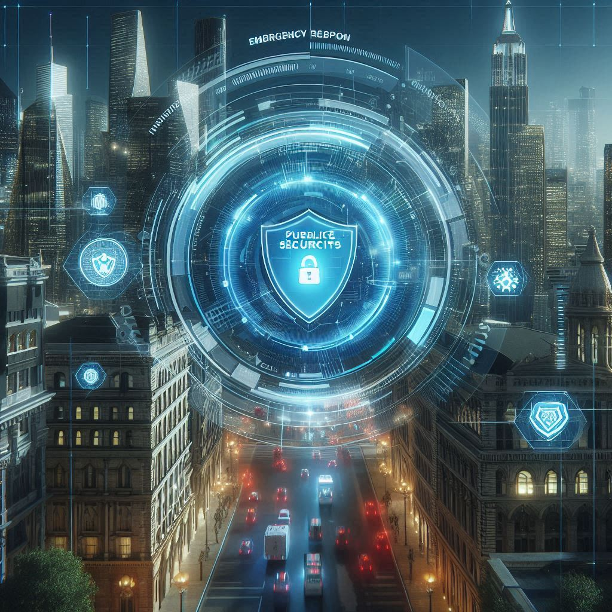

Public Services Security Intelligence
Safeguarding urban resilience systems with AI-driven cybersecurity for emergency response, digital governance, and law enforcement tech.
Emergency Network Protection
Defending 911 systems, emergency alerts, and dispatch platforms from digital threats and outages.
City Administration Cybersecurity
Securing citizen data, online service portals, and communication infrastructure of urban governments.
Secure Policing Technologies
Protecting body cam footage, digital case files, and smart law enforcement systems with encrypted access and AI auditing tools.